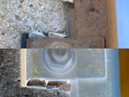

| Name | invert() |
|---|---|
| Examples | import hypermedia.video.*;
size( 160, 120 );
OpenCV opencv = new OpenCV(this);
opencv.loadImage("P1000201.jpg");
opencv.ROI( 0, 60, 160, 60 );
opencv.invert();
image( opencv.image(), 0, 0 );
|
| Description | Invert image. |
| Syntax | invert(); |
| Return | None |
| Usage | Application |
| Related |